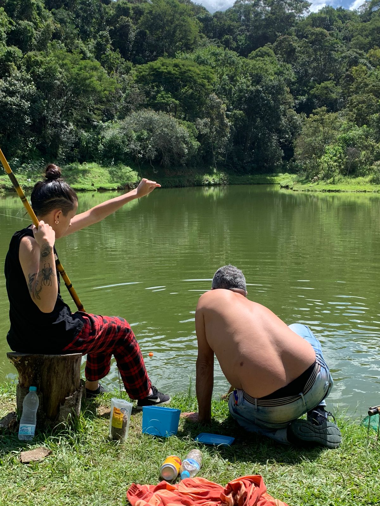

UM PORTAL PARA APRENDER A PESCAR
Onde a paixão pela pesca encontra o conhecimento
No Fishing Lab, a curiosidade encontra o lago. Descubra os peixes, prepare seu equipamento e aprenda a pescar em pesqueiros com mais consciência.
Para iniciantes. Com respeito à natureza.
